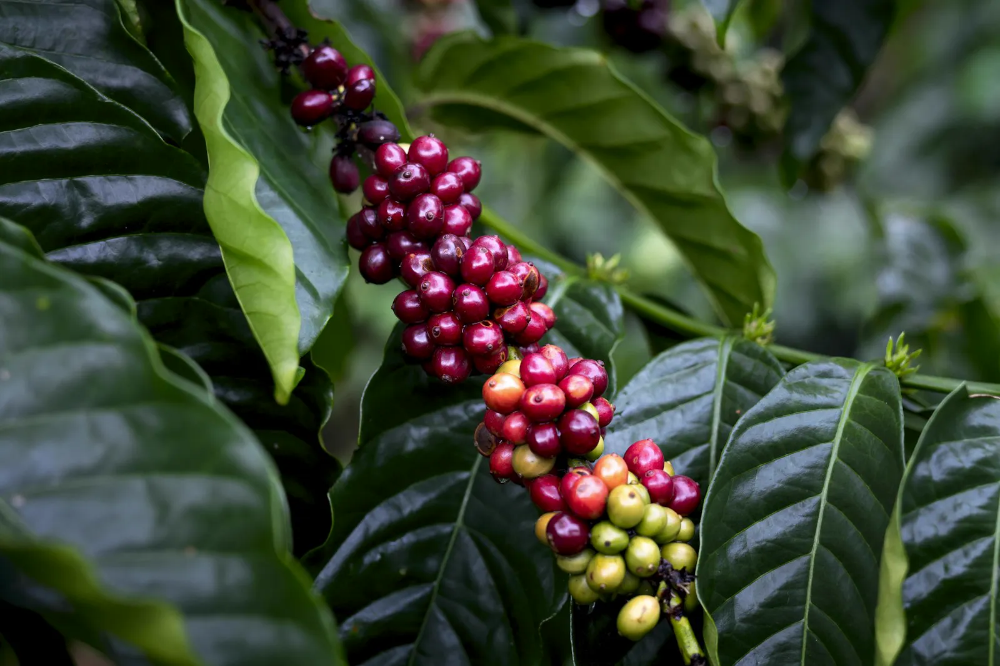
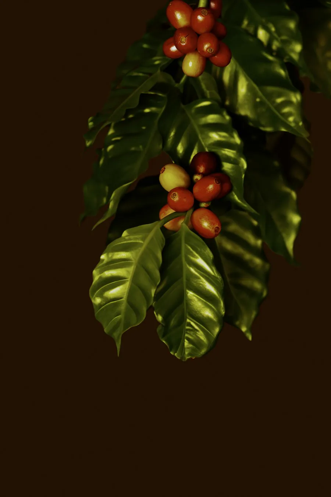
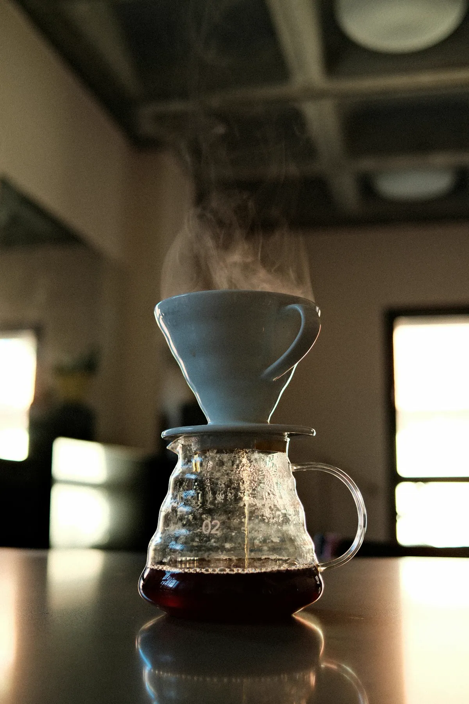
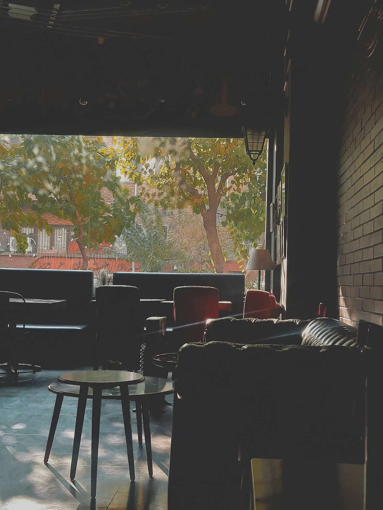

Sương
Cà phê rang mỗi sáng, uống khi sương còn trên phố.
I Nguồn
Một ngọn đồi, sương phủ tới chín giờ sáng.
Hạt của Sương đến từ Cầu Đất, nơi arabica được trồng trên những sườn đồi cao hơn 1.500 mét. Đêm lạnh, ngày nắng nhẹ, quả chín chậm. Chậm là lý do vị ngọt có thời gian hình thành.
Chỉ quả chín đỏ được hái. Hạt được sơ chế ướt, phơi trên giàn cao cho thoáng gió, rồi nghỉ vài tuần trước khi về Hà Nội. Chúng tôi rang theo mẻ nhỏ, đủ cho vài ngày, để ly nào cũng là hạt mới.


Chương hai
Rang.
Mười hai phút, và một tiếng tách.
Mỗi mẻ được ghi tay vào sổ rang, từng phút một. Đây là một mẻ như thế, theo nhịp cuộn của bạn.
Dừng ở đâu là chuyện khẩu vị. Chọn điểm dừng của bạn, cả trang sẽ đổi theo.
Đường nhiệt độ hạt minh họa cho một mẻ rang điển hình.
III Pha

Ba cách pha, một nguyên tắc: đừng vội.
Bạn đang chọn rang vừa. Hạt rang càng đậm thì nước nên nguội hơn một chút, để vị đắng không lấn mất vị ngọt.
Phin
20 g · 90 ml · 4 đến 5 phútXay vừa, ủ hơi 30 giây trước khi rót đầy. Đừng nén chặt.
Rót tay
15 g · 240 ml · 92°CRót thành vòng chậm, chia làm ba lần, tổng chừng ba phút.
Ủ lạnh
1 phần cà phê · 8 phần nước · 16 giờXay thô, ngâm trong ngăn mát, lọc kỹ. Giữ được ba ngày.

V Ghé quán
Một chỗ cạnh cửa sổ, lúc sương chưa tan.
- Mở cửa
- 7:00 đến 18:00, mỗi ngày
- Ở đâu
- Hà Nội
- Rang
- Mỗi sáng thứ Ba và thứ Sáu
- Ly của bạn
- Rang vừa, pha 92°C
Bàn cạnh cửa sổ thường kín trước tám giờ. Muốn chắc có chỗ, hãy giữ chỗ trước một ngày.
Website mẫu cho một thương hiệu giả định. Ảnh minh họa từ Unsplash (giấy phép Unsplash), cành cà phê và hạt rang vẽ bằng mã. · Chính sách riêng tư